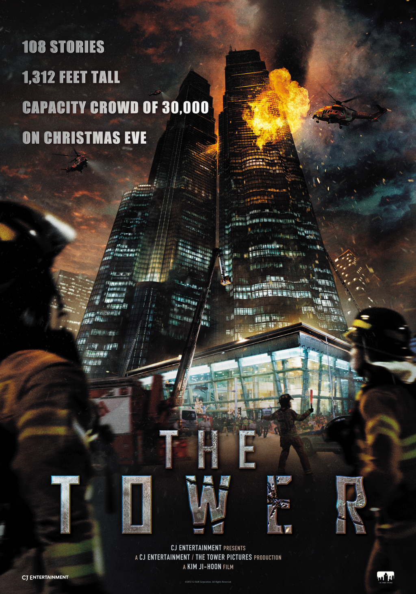

The Tower
Kim Ji-hoon
Lee Dae-ho (Kim Sang-kyung) is a single father and manager of the 120 story luxurious landmark building complex, Tower Sky in Yeouido, Seoul. He is an earnest employee liked by his colleagues and is secretly in love and secretly even wanted to marry with Seo Yoon-hee (Son Ye-jin), a restaurant manager. The owner of the complex, Mr. Jo decides to hold a "White Christmas" party for tenants and VIPs on Christmas Eve, with helicopters circling above with huge lights attached below them, sprinkling snow onto the party. Dae-ho has promised to spend the day at an amusement park with his daughter Ha-na, but had to cancel when he is needed at the party. However, the building has faulty water sprinklers due to frozen pipes, but Mr. Cha, the Tower Sky's safety section head, is more concerned for the party than any possible architectural errors within the building, despite warnings from his fellow employers about these errors. (One example of their warnings is when cook Young-cheol (Jeon Bae-soo) accidentally leaves a stove on for too long and causes a minor fire.)
Young-cheo is in love with a receptionist within the building named Min-jung, and even sneaks out of the kitchen while on duty to make her an ice cream. Meanwhile, Lee Seon-woo (Do Ji-han) is a rookie fireman entering the Yeouido Fire Station. When he gets accepted, he learns that many of the firefighters get more breaks than actual firefighting. In a prank to fool Seon-woo, the other firefighters ring the fire alarm for the squad to assemble while he takes a shower, causing him to appear in front of his entire team naked, much to the other firefighters' and even his own pleasure as they put his helmet on him for the first time.
The Korean version